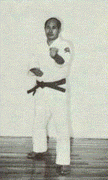
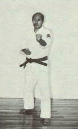
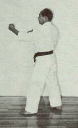
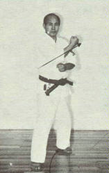
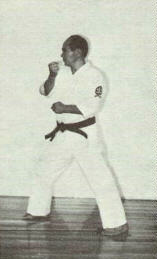
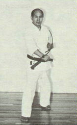
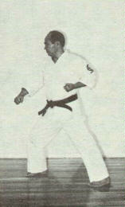
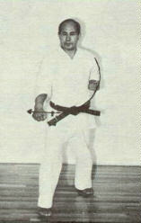
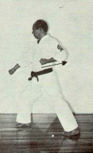
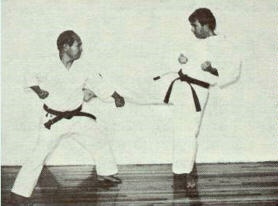

|
blocking techniques (uke-waza) |
DEMONSTRATED BY SENSEI KUNIO MURAYAMA, 7TH DAN JKF SHITO-KAI.
Gedan
Barai
(Hari Uke)
Low-level, downward block / sweeping block.

A BREAKDOWN OF THE TECHNIQUE FOLLOWS...
(1)


(2)


(3)


(4)


BASIC APPLICATION OF GEDAN BARI
(Murayama Sensei assisted by Jose Luis Calderoni)

References/Bibliography
Photographs by Ing. Antonio Rodriguez Gonzalez, excerpted with permission from Karate-do Shito-Ryu Shito-Kai Mexico - Manual Practico - 1986, Ing. Jose Luis Calderoni Elias.